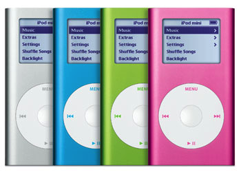
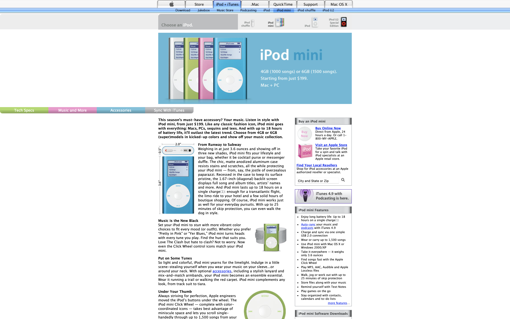

4GB (1000 songs) or 6GB (1500 songs). Starting from just $199. Mac + PC
This season’s must-have accessory? Your music. Listen in style with iPod mini, from just $199. Like any classic fashion icon, iPod mini goes with everything: Macs, PCs, sequins and tees. And with up to 18 hours of battery life, it’ll outlast the latest trend. Choose from 4GB or 6GB (super)models in kicked-up colors and show off your music collection.
 